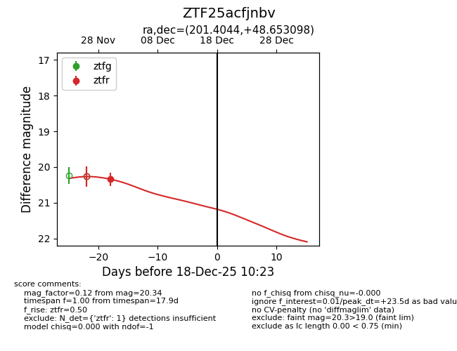
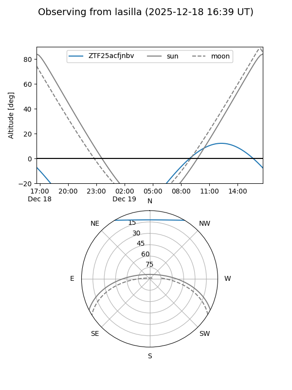
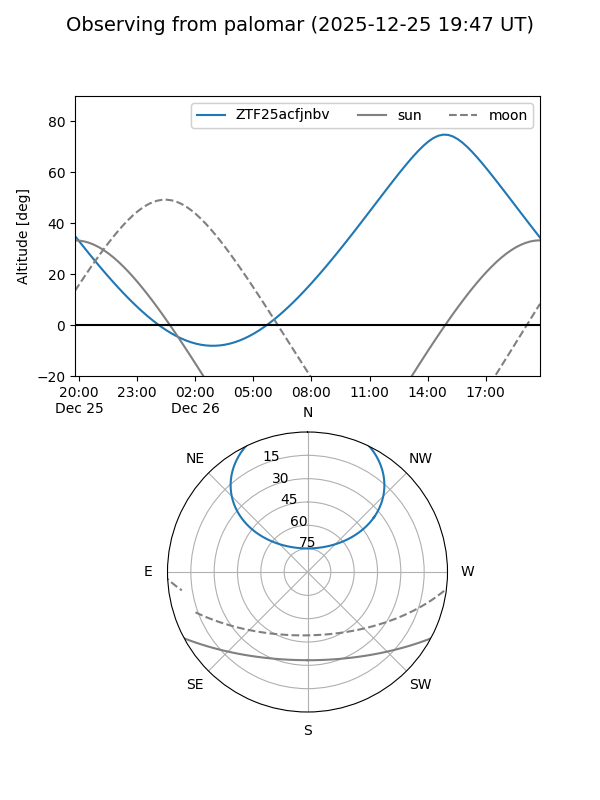

ZTF25acfjnbv
Target ZTF25acfjnbv at 2025-12-18 11:17
Aliases and brokers:
FINK: fink-portal.org/ZTF25acfjnbv
Lasair: lasair-ztf.lsst.ac.uk/objects/ZTF25acfjnbv
ALeRCE: alerce.online/object/ZTF25acfjnbv
alt names
ZTF25acfjnbv (ztf,fink_ztf)
Coordinates:
equatorial (ra, dec) = 201.4044,+48.65310
equatorial (HMS+DMS) = 13:25:37.05,+48:39:11.15
galactic (l, b) = (108.0837,+67.47796)
Photometry
last ztfr=20.34
1 ztfr detections
Lightcurve

Visibility


Additional plots